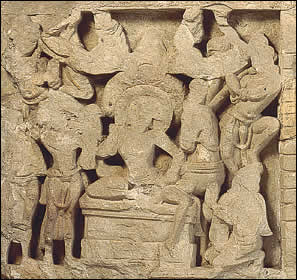

Leaving Kanthaka and Chandaka
Prince Siddhartha left the palace in the middle of the night to seek a greater understanding of the world. He took his horse Kanthaka and his groom Chandaka with him. At the city gate, Siddhartha took off his princely robes and cut his hair. He sent his groom and horse back to the palace. Then he began his journey alone.In this scene, Siddhartha sits upon a throne taking leave of his kneeling groom, Chandaka and his horse, Kanthaka. The other figures in the scene are probably worshippers. |